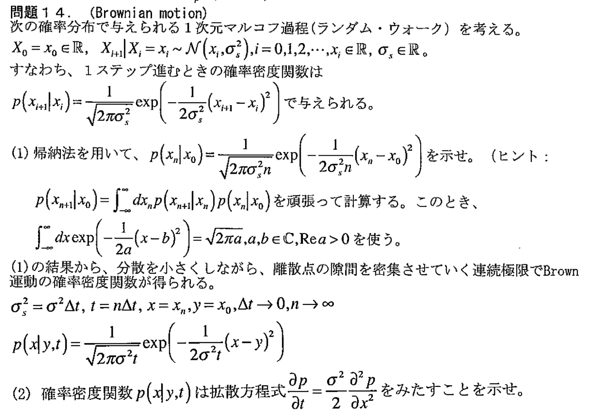

解答
1
\(n=n\) の時に以下が成立すると仮定する。
$$p\left(x_n|x_0\right) = \frac{1}{\sqrt{2\pi\sigma_s^2n}}\exp\left(-\frac{1}{2\sigma_s^2n}\left(x_n-x_0\right)^2\right)$$
すると、
$$
\begin{aligned}
p\left(x_{n+1}|x_0\right)
&= \int_{-\infty}^{\infty}dx_np\left(x_{n+1}|x_n\right)p\left(x_n|x_0\right)\\
&= \int_{-\infty}^{\infty}dx_n\left(\frac{1}{\sqrt{2\pi\sigma_s^2}}\exp\left(-\frac{1}{2\sigma_s^2}\left(x_{n+1}-x_n\right)^2\right)\right)\left(\frac{1}{\sqrt{2\pi\sigma_s^2n}}\exp\left(-\frac{1}{2\sigma_s^2n}\left(x_n-x_0\right)^2\right)\right)\\
&= \frac{1}{\sqrt{2\pi\sigma_s^2}}\frac{1}{\sqrt{2\pi\sigma_s^2n}}\int_{-\infty}^{\infty}dx_n\exp\left\{-\frac{1}{2\sigma_s^2}\left(\left(x_{n+1}-x_n\right)^2 +\frac{1}{n}\left(x_n-x_0\right)^2\right)\right\}\\
\end{aligned}
$$
ここで、\(\exp\) の内部を \(x_n\) に注目すると、
$$
\begin{aligned}
&\left(x_{n+1}-x_n\right)^2 +\frac{1}{n}\left(x_n-x_0\right)^2\\
&=\frac{n+1}{n}x_n^2 + 2\left(x_{n+1}+\frac{x_0}{n}\right)x_n + \left(x_{n+1}^2 + \frac{1}{n}x_0^2\right)\\
&=\frac{n+1}{n}\left(x_n-\frac{n}{n+1}\left(x_{n+1}+\frac{x_0}{n}\right)\right)^2 + \frac{1}{n+1}\left(x_{n+1}-x_0\right)^2
\end{aligned}
$$
と整理できる。また、ガウス積分より上式の第1項は、
$$
\int_{-\infty}^{\infty}dx_n\exp\left(-\frac{1}{2\sigma_s^2}\frac{n+1}{n}\left(x_n-\frac{n}{n+1}\left(x_{n+1}+\frac{x_0}{n}\right)\right)^2\right) = \sqrt{2\pi\sigma_s^2\frac{n}{n+1}}
$$
と積分できる。したがって、これらを代入して、
$$
\begin{aligned}
p\left(x_{n+1}|x_0\right)
&= \frac{1}{\sqrt{2\pi\sigma_s^2}}\frac{1}{\sqrt{2\pi\sigma_s^2n}}\int_{-\infty}^{\infty}dx_n\exp\left\{-\frac{1}{2\sigma_s^2}\left(\left(x_{n+1}-x_n\right)^2 +\frac{1}{n}\left(x_n-x_0\right)^2\right)\right\}\\
&= \frac{1}{\sqrt{2\pi\sigma_s^2}}\frac{1}{\sqrt{2\pi\sigma_s^2n}}\left(\sqrt{2\pi\sigma_s^2\frac{n}{n+1}}\right)\exp\left\{-\frac{1}{2\sigma_s^2}\frac{1}{n+1}\left(x_{n+1}-x_0\right)^2\right\}\\
&=\frac{1}{\sqrt{2\pi\sigma_s^2\left(n+1\right)}}\exp\left(-\frac{1}{2\sigma_s^2\left(n+1\right)}\left(x_{n+1}-x_0\right)^2\right)
\end{aligned}
$$
以上より、帰納法から題意が示せた。
2
$$
\begin{aligned}
\frac{\partial p}{\partial t}
&=\frac{1}{\sqrt{2\pi\sigma^2}}\left(-\frac{1}{2}t^{-\frac{3}{2}} + \frac{\left(x-y\right)^2}{2\sigma^2}t^{-\frac{5}{2}}\right)\exp\left(-\frac{1}{2\sigma^2t}\left(x-y\right)^2\right)\\
\frac{\partial p}{\partial x}
&= \frac{1}{\sqrt{2\pi\sigma^2t}}\left(-\frac{1}{\sigma^2t}\left(x-y\right)\right)\exp\left(-\frac{1}{2\sigma^2t}\left(x-y\right)^2\right)\\
\frac{\partial^2 p}{\partial x^2}
&= \frac{1}{\sqrt{2\pi\sigma^2t}}\left(-\frac{1}{\sigma^2t}-\frac{1}{\sigma^2t}\left(x-y\right)\left(-\frac{x-y}{\sigma^2t}\right)\right)\exp\left(-\frac{1}{2\sigma^2t}\left(x-y\right)^2\right)\\
&=\frac{1}{\sqrt{2\pi\sigma^2}}\frac{1}{\sqrt{t}}\left(\frac{1}{\sigma^2t}\right)\left(-1 + \frac{\left(x-y\right)^2}{\sigma^2t}\right)\exp\left(-\frac{1}{2\sigma^2t}\left(x-y\right)^2\right)\\
&=\frac{1}{\sqrt{2\pi\sigma^2}}\left(\frac{1}{\sigma^2}\right)\left(-t^{-\frac{3}{2}} + \frac{\left(x-y\right)^2}{\sigma^2}t^{-\frac{5}{2}}\right)\exp\left(-\frac{1}{2\sigma^2t}\left(x-y\right)^2\right)\\
&=\frac{2}{\sigma^2}\frac{\partial p}{\partial t}
\end{aligned}
$$
より、題意が示された。
これにより、「ミクロスコピックな」ブラウン運動から「マクロスコピックな」拡散方程式を導出できた。